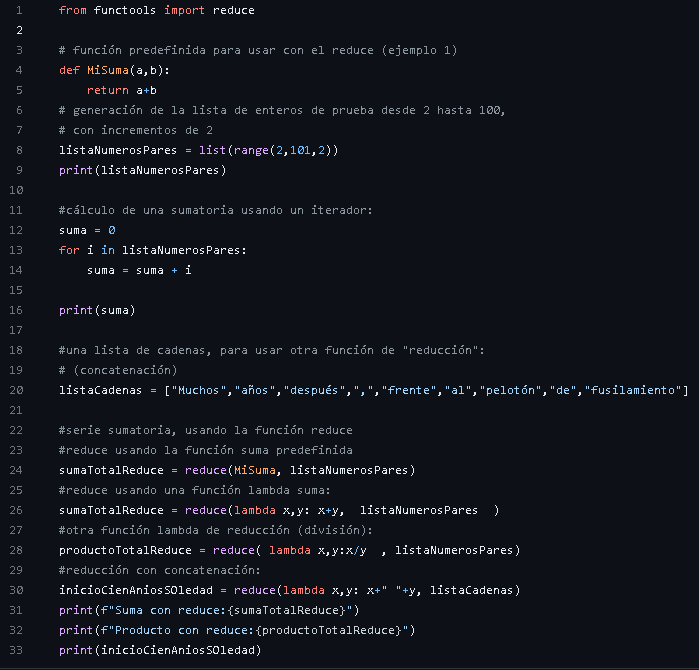
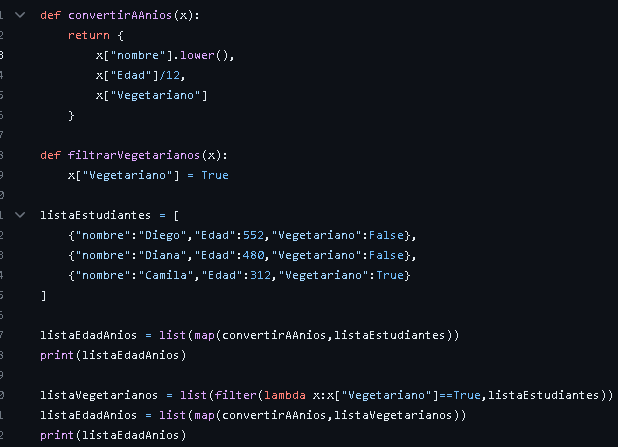
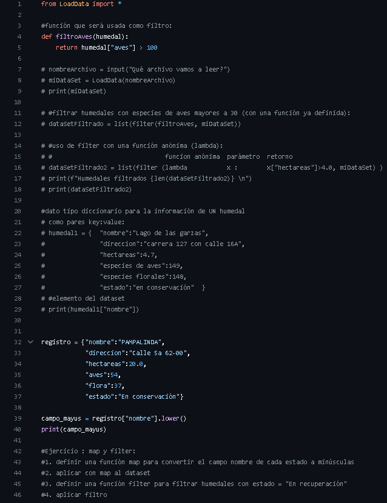
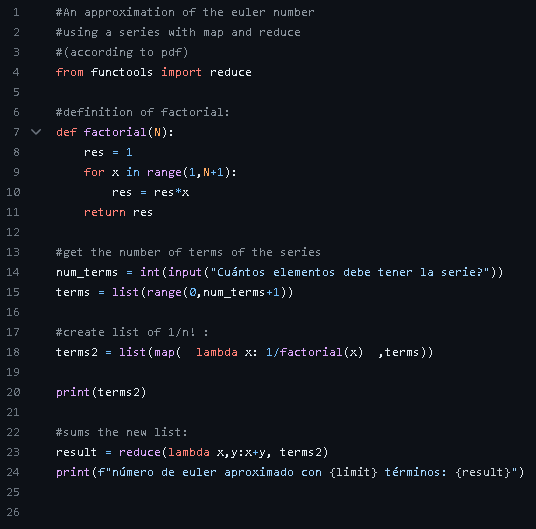

En esta unidad, al principio del semestre empezamos viendo o recordando algunas funciones basica de Python como funciones de primera orden y al orden, programacion funcional, funciones Map y Reduce. Por ultimo vimos los patrones de diseño Singelton y Strategy.
A continuacion mostraré algunos codigos realizados en clase:
Funcion Reduce
Funcion Map Filtro
Ejemplo aplicando funciones Map, reduce, euler
 En los siguientes botones puedes seguir explorando por las unidades: